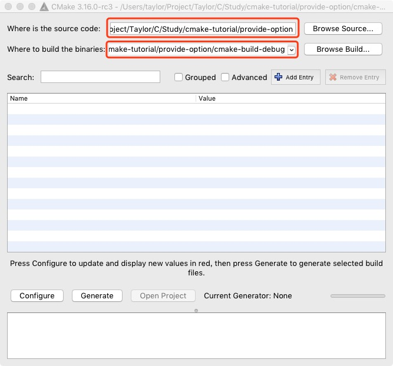
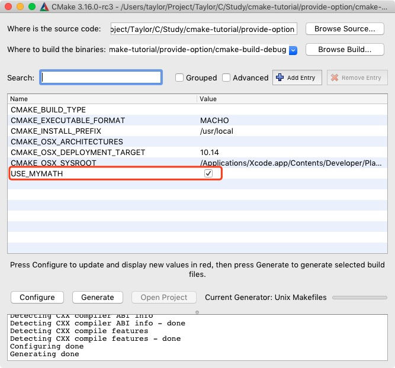

CMake 是一种跨平台的免费开源软件工具，用于使用与编译器无关的方法来管理软件的构建过程。在 Android Studio 上进行 NDK 开发默认就是使用 CMake 管理 C/C++ 代码，因此在学习 NDK 之前最好对 CMake 有一定的了解。
本文主要以翻译 CMake 的官方教程文档为主，加上自己的一些理解，该教程涵盖了 CMake 的常见使用场景。由于能力有限，翻译部分采用机翻+人工校对，翻译有问题的地方，说声抱歉。
开发环境：
- macOS 10.14.6
- CMake 3.15.1
- CLion 2018.2.4
基础项目
最基础的项目是单个源代码文件构建的可执行文件。
本示例提供的源代码文件是 tutorial.cxx，可用于计算数字的平方根。代码如下：
1 | // A simple program that computes the square root of a number |
对于简单的项目，只需三行内容的 CMakeLists.txt 文件，这将是本教程的起点。在项目根目录下创建一个 CMakeLists.txt 文件，其内容如下：
1 | # 设置运行此配置文件所需的CMake最低版本 |
请注意，此示例在
CMakeLists.txt文件中使用小写命令。CMake支持大写，小写和大小写混合命令。
当前项目结构如下：
1 | . |
在项目根目录运行命令生成编译中间文件以及 makefile 文件：
1 | cmake . |
命令执行后会在项目根目录下生成文件，项目结构如下：
1 | . |
这样源文件和生成的文件都混在一起，不方便管理，建议使用一个专门的目录管理这些生成的文件。这里使用 CLion 默认生成文件目录 cmake-build-debug，在项目根目录运行编译命令并指定生成文件目录：
1 | cmake -B cmake-build-debug |
项目结构如下：
1 | . |
在项目根目录运行命令生成可执行文件：
1 | cmake --build cmake-build-debug |
命令执行后生成了可执行文件 Tutorial，项目结构如下：
1 | . |
在项目根目录运行生成的可执行文件且不携带参数：
1 | ./cmake-build-debug/Tutorial |
终端输出：
1 | Usage: ./cmake-build-debug/Tutorial number |
在项目根目录运行生成的可执行文件并携带参数：
1 | ./cmake-build-debug/Tutorial 2 |
终端输出：
1 | The square root of 2 is 1.41421 |
添加版本号和配置头文件
我们添加的第一个功能是为我们的可执行文件和项目提供版本号。虽然我们可以仅在源代码中执行此操作，但是使用 CMakeLists.txt 可以提供更大的灵活性。
首先，修改 CMakeLists.txt 文件以设置版本号。
1 | project(Tutorial VERSION 1.0) |
然后，配置头文件以将版本号传递给源代码：
1 | # configure a header file to pass some of the CMake settings |
由于已配置的文件将被写入二进制目录，因此我们必须将该目录添加到路径列表中以搜索包含文件。将以下行添加到CMakeLists.txt文件的末尾：
1 | # add the binary tree to the search path for include files |
使用您喜欢的编辑器，在源目录中使用以下内容创建 TutorialConfig.h.in：
1 | // the configured options and settings for Tutorial |
当 CMake 配置此头文件时，会在二进制目录下生成一个文件 TutorialConfig.h，会把 TutorialConfig.h.in 中的内容拷贝到里面，只是把 @Tutorial_VERSION_MAJOR@ 和 @Tutorial_VERSION_MINOR@ 替换成在 CMakeLists.txt 的配置的 1 和 0。
这里的 1 和 0 是怎么和 Tutorial_VERSION_MAJOR 、Tutorial_VERSION_MINOR关联上的? 在 project() 中指定了 VERSION 后，CMake 会把版本信息存储在以下变量中：
PROJECT_VERSION,<PROJECT-NAME>_VERSIONPROJECT_VERSION_MAJOR,<PROJECT-NAME>_VERSION_MAJORPROJECT_VERSION_MINOR,<PROJECT-NAME>_VERSION_MINORPROJECT_VERSION_PATCH,<PROJECT-NAME>_VERSION_PATCHPROJECT_VERSION_TWEAK,<PROJECT-NAME>_VERSION_TWEAK.
MAJOR、MINOR、PATCH、TWEAK 分别代表着版本号的四位，比如版本号 1.2.3.4，MAJOR=1、MINOR=2、PATCH=3、TWEAK=4。版本号不一定非得是4位，可以只有1位，只是最大为4位。
这里 PROJECT-NAME 值为 Tutorial，所以能从 Tutorial_VERSION_MAJOR 和 Tutorial_VERSION_MINOR 中读取到版本信息。
当从顶层 CMakeLists.txt 调用 project() 命令时，该版本也存储在变量 CMAKE_PROJECT_VERSION 中。
接下来，修改 tutorial.cxx 以包含配置的头文 件TutorialConfig.h 和打印出版本号，如下所示：
1 | // A simple program that computes the square root of a number |
在项目根目录运行命令编译项目和生成可执行文件：
1 | cmake -B cmake-build-debug |
在项目根目录运行生成的可执行文件且不携带参数：
1 | ./cmake-build-debug/Tutorial |
终端输出：
1 | ./cmake-build-debug/Tutorial Version 1.0 |
指定C++标准
在 CMake 中启用对特定 C ++ 标准的支持的最简单方法是使用 CMAKE_CXX_STANDARD 变量。对于本教程，请将 CMakeLists.txt 文件中的 CMAKE_CXX_STANDARD 变量设置为11，并将 CMAKE_CXX_STANDARD_REQUIRED 设置为 True：
1 | # specify the C++ standard |
接下来，通过在 tutorial.cxx 中用 std :: stod 替换 atof，将一些 C ++ 11 功能添加到我们的项目中。同时，删除 #include <cstdlib>。
1 | // A simple program that computes the square root of a number |
在项目根目录运行命令编译项目和生成可执行文件：
1 | cmake -B cmake-build-debug |
在项目根目录运行生成的可执行文件：
1 | ./cmake-build-debug/Tutorial 2 |
终端输出：
1 | The square root of 2 is 1.41421 |
添加库
现在，我们将添加一个库到我们的项目中，该库用于计算数字的平方根，可执行文件可以使用此库，而不是使用编译器提供的标准平方根函数。该库有两个文件：
-
MathFunctions.h1
double mysqrt(double x);
-
mysqrt.cxx源文件有一个
mysqrt的函数，该函数提供与编译器的sqrt函数类似的功能。1
2
3
4
5
6
7
8
9
10
11
12
13
14
15
16
17
18
19
20
21
22
23
// a hack square root calculation using simple operations
double mysqrt(double x) {
if (x <= 0) {
return 0;
}
double result = x;
// do ten iterations
for (int i = 0; i < 10; ++i) {
if (result <= 0) {
result = 0.1;
}
double delta = x - (result * result);
result = result + 0.5 * delta / result;
std::cout << "Computing sqrt of " << x << " to be " << result << std::endl;
}
return result;
}
在项目根目录下创建一个文件夹 MathFunctions ，把该库放在其下，在其下创建一个 CMakeLists.txt 文件，内容如下：
1 | add_library(MathFunctions mysqrt.cxx) |
为了使用新库，我们将在顶层 CMakeLists.txt 文件中添加 add_subdirectory 调用，以便构建该库。我们将新库添加到可执行文件，并将 MathFunctions 添加为包含目录，以便可以找到 mqsqrt.h 头文件。顶级 CMakeLists.txt 文件的最后几行现在应如下所示：
1 | # add the MathFunctions library |
修改 tutorial.cxx 使用引入的库，其内容如下：
1 | // A simple program that computes the square root of a number |
在项目根目录运行命令编译项目和生成可执行文件：
1 | cmake -B cmake-build-debug |
在项目根目录运行生成的可执行文件：
1 | ./cmake-build-debug/Tutorial 2 |
终端输出：
1 | Computing sqrt of 2 to be 1.5 |
提供选项
现在让我们将 MathFunctions 库设为可选。虽然对于本教程而言确实不需要这样做，但是对于大型项目来说，这是很常见的。第一步是向顶级 CMakeLists.txt 文件添加一个选项：
1 | # should we use our own math functions |
此选项将显示在 CMake GUI 和 ccmake 中，默认值ON可由用户更改。此设置将存储在缓存中，因此用户无需在每次在构建目录上运行CMake时都设置该值。
下一个是使建立和链接 MathFunctions 库成为条件。为此，我们将顶级 CMakeLists.txt 文件的结尾更改为如下所示：
1 | # add the MathFunctions library |
请注意，这里使用变量
EXTRA_LIBS来收集所有可选库，以供以后链接到可执行文件中。变量EXTRA_INCLUDES类似地用于可选的头文件。当处理许多可选组件时，这是一种经典方法，我们将在下一步中介绍现代方法。
对源代码的相应更改非常简单。首先，根据需要在 tutorial.cxx 中决定包含 MathFunctions 头还是 包含 <cmath>：
1 | // should we include the MathFunctions header? |
然后，在同一文件中，使用 USE_MYMATH 来确定使用哪个平方根函数：
1 |
|
由于源代码现在需要 USE_MYMATH，因此可以使用以下行将其添加到 TutorialConfig.h.in 中：
1 | #cmakedefine USE_MYMATH |
在 download 上根据自己的平台下载对应版本的 cmake-gui，安装后打开软件，选择源代码目录和生成文件，如下图所示：

点击左下角 Generate 按钮，软件会弹出的选择项目生成器的弹窗，这里默认就好，点击点击 Done 按钮，cmake-gui 开始编译项目，生成中间文件，并且可以在软件看到我们为用户提供的选项：

这个时候 cmake-build-debug/TutorialConfig.h 的内容如下：
1 | // the configured options and settings for Tutorial |
在项目根目录运行命令生成可执行文件：
1 | cmake --build cmake-build-debug |
在项目根目录运行生成的可执行文件：
1 | ./cmake-build-debug/Tutorial 2 |
终端输出：
1 | Computing sqrt of 2 to be 1.5 |
取消 cmake-gui 中的 USE_MYMATH 的勾选，点击 Generate 按钮重新编译项目，这个时候 cmake-build-debug/TutorialConfig.h 的内容如下：
1 | // the configured options and settings for Tutorial |
在项目根目录运行命令生成可执行文件：
1 | cmake --build cmake-build-debug |
在项目根目录运行生成的可执行文件：
1 | ./cmake-build-debug/Tutorial 2 |
终端输出：
1 | The square root of 2 is 1.41421 |
CMake使用教程系列文章
- CMake使用教程(一)
- 基础项目
- 添加版本号和配置头文件
- 指定C++标准
- 添加库
- 提供选项
- CMake使用教程(二)
- 添加“库”的使用要求
- 安装
- 测试
- 系统自检
- CMake使用教程(三)
- 指定编译定义
- 添加自定义命令和生成的文件
- 生成安装程序
- 添加对仪表板的支持
- CMake使用教程(四)
- 混合静态和共享
- 添加生成器表达式
- 添加导出配置